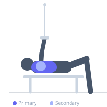
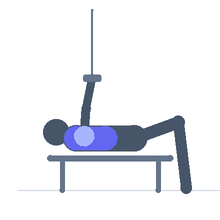

Exercise guide / Cable Fly
Cable Fly
The cable fly is a pectoral isolation exercise using a dual-pulley cable machine with the cables set at mid-height (chest level). Unlike dumbbell flyes, cable tension remains constant throughout the full arc, maintaining meaningful resistance at both the stretched and contracted positions. This makes it highly effective for pectoralis major hypertrophy.
Primary muscles
pectoralis major sternal
pectoralis major clavicular
Secondary muscles
deltoid anterior
pectoralis minor
Stabilizers
supraspinatus
brachialis
Equipment
Cable Machine (Dual Pulley / Functional Trainer)


Starting position
- Stand in the center of a dual-pulley cable machine with the pulleys set at chest height. Grasp the handles, stagger one foot slightly forward for balance, and lean the torso forward slightly. Arms are open wide with a slight bend at the elbow.
Setup
- Set both cable pulleys to chest or mid-torso height. Attach single-handle attachments. Select a moderate weight that allows full range of motion.
Steps
- Step 1: Stand between the two cable stacks, grasp the handles, and step forward to create tension. Stagger stance slightly; hinge torso forward slightly.
- Step 2: Begin with arms wide, elbows slightly bent, feeling a stretch across the chest.
- Step 3: Exhale and arc both arms together in front of your body, squeezing the chest at the point of peak contraction.
- Step 4: Inhale and slowly return the arms to the wide starting position, controlling the eccentric stretch.
Coaching cues
- Imagine hugging a large tree — maintain that arm shape throughout
- Lead with your pecs, not your hands
Breathing
- Exhale as you bring the cables together; inhale as you open the arms back to the start.
Range of motion
- Open arms as wide as comfortable without shoulder discomfort; squeeze hard at the midline at the top of the rep.
Tempo
- 2-1-2-0 (2 seconds open, 1 second squeeze, 2 seconds close)
Common mistakes
- Fully straightening the elbows, which shifts load to the shoulder joint
- Using momentum by swinging the torso rather than controlling with the pecs
Safety
- Maintain a slight, fixed bend in the elbows throughout — the arm angle should not change during the arc
- Do not let the weight stack slam down at the end of the eccentric
Training
- strength: 8–12 reps
- hypertrophy: 10–20 reps
- endurance: 15–25 reps
- strength: 3–4 sets
- hypertrophy: 3–4 sets
- endurance: 2–3 sets
- Rest: {'strength': 90, 'hypertrophy': 60, 'endurance': 45}